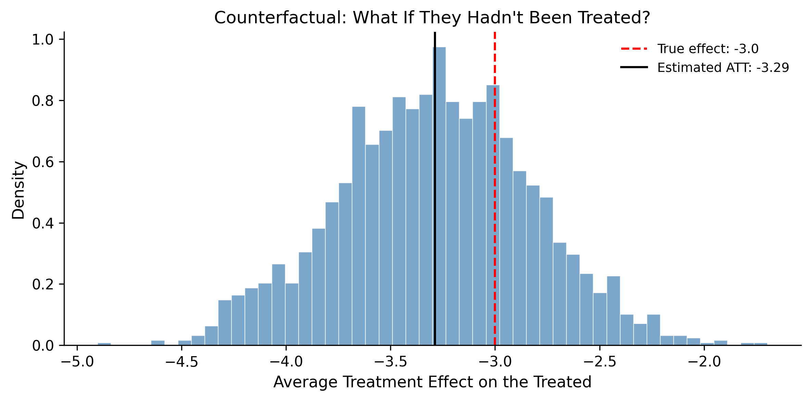

Your model predicts perfectly. Every metric looks great. Then someone acts on the predictions and nothing changes—or things get worse.
This happens more often than anyone admits. A marketing team builds a model that says customers who receive emails buy more. So they send more emails. Revenue doesn’t budge. Why? Because the model learned a correlation—customers who were already going to buy happened to open emails—not a causal relationship. The emails weren’t driving purchases; purchase intent was driving email opens.
Prediction and decision-making are not the same thing. Prediction asks “what will happen?” Decision-making asks “what will happen if I do this?” That second question is fundamentally causal, and answering it requires different tools than a standard regression or classifier.
This chapter builds those tools. You will learn to draw causal graphs that make your assumptions explicit, run Bayesian A/B tests that give you direct probability statements about treatment effects, estimate causal effects from observational data by adjusting for confounders, analyze interrupted time series to measure the impact of an intervention, and reason about counterfactuals—what would have happened under a different decision. By the end, you will be able to move from “these variables are associated” to “this action caused that outcome,” with honest uncertainty bounds on every claim.
Imports and setup
import pymc as pmimport arviz as azimport numpy as npimport pandas as pdimport matplotlib.pyplot as pltfrom numpy.random import default_rngrng = default_rng(42)plt.style.use("assets/book.mplstyle")print(f"PyMC {pm.__version__}, ArviZ {az.__version__}")
PyMC 5.25.1, ArviZ 0.23.4
9.1 Correlation Is Not Causation (But We Need Causation)
You have heard “correlation is not causation” so many times it has lost its punch. Let’s make it concrete with two classic examples that show exactly how correlation misleads.
Ice cream and drowning. Ice cream sales and drowning deaths are positively correlated. Nobody believes ice cream causes drowning. The hidden variable is temperature: hot days drive both ice cream consumption and swimming, which increases drowning risk. Temperature is a confounder—a variable that influences both the supposed cause and the supposed effect.
Shoe size and reading ability. Among children, shoe size correlates with reading scores. Bigger feet don’t help you read. Age is the confounder: older children have bigger feet and better reading skills.
These examples feel obvious because you know the confounder. In practice, confounders are rarely so clear. Does exercise reduce depression, or do less-depressed people exercise more? Does a college degree increase earnings, or do the same traits that get you into college also get you higher pay? These questions matter for policy and business decisions, and getting them wrong is expensive.
9.1.1 Why prediction models fail for causal questions
A predictive model doesn’t care why variables are associated. If shoe size predicts reading scores, the model will use it. That works fine for prediction—if you want to guess a child’s reading level and you happen to know their shoe size, go ahead. But if you try to intervene based on the model—say, by giving children bigger shoes—nothing changes.
The distinction Thomas Wiecki draws is sharp: “The purpose of data science is to make better actions, not forecasts.” He spent a decade trying to explain Bayesian modeling to businesses, and this framing is what finally landed. A prediction model tells you what to expect. A causal model tells you what to do. If you want actions that lead to desirable outcomes, you need to understand what causes what—and that requires a different kind of model than the one that minimizes prediction error.
9.1.2 The fundamental problem of causal inference
The deepest challenge is not confounding—it is that we can never directly observe a causal effect. Suppose you take aspirin for a headache and the headache goes away. Did the aspirin cause the relief? To know for sure, you would need to see what would have happened if you hadn’t taken the aspirin—the counterfactual. But you can’t live the same moment twice. You either took it or you didn’t.
This is the fundamental problem of causal inference: for any individual unit (a person, a website visitor, a patient), we observe the outcome under the treatment they actually received, but never under the treatment they didn’t receive. Causal inference is fundamentally about estimating something we cannot observe.
Let’s simulate this to make it tangible. We will create data where we know the true causal effect because we control the simulation.
True causal effect: -3.0
Naive difference in means: -0.69
The naive comparison is biased because older people are more likely to receive treatment and have higher outcomes. The raw difference mixes the causal effect with the confounding effect of age.
Benjamin Vincent, creator of the CausalPy package, illustrates this trap vividly with a simulated tea-and-death example. Among 5,000 simulated people, observational data shows that 70% of deaths occurred among tea drinkers—tea appears deadly. But age is the confounder: older people drink more tea and are more likely to die. When Vincent simulates a randomized trial on the same population—assigning tea or no-tea randomly so that age no longer confounds—the result flips: 70% of deaths are among non-tea drinkers. Tea is actually protective. Same population, same death mechanism, opposite conclusions—all because confounding was present in the observational data and absent in the randomized design. This is Simpson’s paradox in its sharpest form, and it underscores why causal reasoning, not just statistical association, must guide decisions.
9.2 The Bayesian Advantage for Causal Inference
Why bring Bayes into causal inference? Three reasons, each practical.
1. Bayesian models naturally encode causal assumptions via DAGs. When you write a PyMC model, you specify how variables generate other variables—a directed, structural story about the data. That story is a causal model. As Thomas Wiecki argues in his causal inference talk, the data generative process that you write down in probabilistic code is a structural causal model: “We don’t call it structural causal modeling, we call it the data generative process. But nonetheless, those two things are the same just through a different lens.” Every pm.Normal(mu=f(parent)) line is an edge in a DAG. Every prior you omit is a variable you assume is independent. The structural choices you make when writing a PyMC model are causal assumptions—you might as well make them deliberately.
2. Priors encode domain knowledge. In causal inference, you always need assumptions—which variables confound which, what direction effects flow. A Bayesian model lets you encode these assumptions explicitly. If you believe the treatment effect is small, you say so with a prior. If a domain expert tells you the effect must be positive, you constrain the prior accordingly. This transparency is an advantage, not a limitation.
3. The posterior gives you direct probability statements. Instead of a p-value that says “if there were no effect, data this extreme would occur 3% of the time,” you get a posterior distribution that says “there is a 97% probability that the treatment effect is between -4.1 and -1.9.” You can compute things like P(treatment helps) or P(effect > threshold) directly. Decision-makers understand these statements without a statistics degree.
These advantages compound. You build a structural model (advantage 1), pour in what you know (advantage 2), and get honest, interpretable uncertainty about the causal effect (advantage 3).
Wiecki also warns against letting the fear of misspecification paralyze you: “It’s great to be wrong, because model criticism— posterior predictive checks, domain expert feedback—quickly identifies what’s wrong. Better to start simple and iterate than to get frozen by fear of the wrong structure.” This iterative stance is the Bayesian workflow applied to causal questions: commit to a structural model, check its implications, revise, repeat.
When randomization is impossible—when ethical, practical, or historical constraints prevent you from assigning treatments— quasi-experimental designs offer a middle path. Benjamin Vincent’s CausalPy package brings synthetic control, interrupted time series, regression discontinuity, and difference-in-differences into the Bayesian framework, making it possible to estimate causal effects from observational data under weaker (but explicit) assumptions. We will cover interrupted time series later in this chapter; the other designs extend the same logic to different settings.
The rest of this chapter shows you how.
9.3 DAGs and Causal Graphs
A directed acyclic graph (DAG) is the language of causal assumptions. Each node is a variable. Each arrow says “this variable directly causes that variable.” The graph is acyclic—no variable can cause itself through a chain of arrows. A DAG doesn’t contain data or parameters; it contains your beliefs about how the world works.
Three structural patterns appear in almost every causal graph. Learning to recognize them is the single most important skill in causal inference.
9.3.1 Confounders (common causes)
A confounder is a variable that causes both the treatment and the outcome:
Z
/ \
v v
X → Y
Here Z causes both X (treatment) and Y (outcome). If you don’t account for Z, the association between X and Y is a mix of the causal effect and the confounding path through Z. Our age example above is exactly this pattern.
Rule: To estimate the causal effect of X on Y, you must condition on (control for) the confounder Z. This blocks the confounding path and isolates the causal path X → Y.
9.3.2 Mediators (causal chains)
A mediator sits on the causal path between treatment and outcome:
X → M → Y
The effect of X on Y flows through M. If you condition on M, you block the causal path and underestimate (or destroy) the total effect.
Rule: Do not condition on a mediator if you want the total effect of X on Y. Only condition on it if you specifically want the direct effect (the part that doesn’t go through M).
9.3.3 Colliders (common effects)
A collider is a variable caused by both the treatment and the outcome (or by variables on both sides):
X → C ← Y
Here X and Y both cause C. In the unconditioned data, X and Y are independent (assuming no other paths). But if you condition on C—by including it in a regression, by selecting a subpopulation defined by C—you create a spurious association between X and Y.
Rule: Do not condition on a collider. Doing so opens a path that was previously blocked and introduces bias.
9.3.4 The backdoor criterion
Given a DAG, the backdoor criterion tells you which variables to condition on to estimate the causal effect of X on Y: block every “backdoor path” (paths from X to Y that start with an arrow into X) without opening new paths through colliders. If you can satisfy the backdoor criterion, conditioning on those variables gives you the causal effect.
Let’s draw these three patterns so you can see them clearly.
If you want the total effect of Exercise on Health, you should condition on Age (a confounder) but not on Weight (a mediator on the Exercise → Weight → Health path). Conditioning on Weight would block part of the causal effect you’re trying to measure. If you want only the direct effect of Exercise on Health (not mediated through weight loss), then conditioning on Weight is appropriate. The DAG makes these choices explicit and defensible.
9.4 Bayesian A/B Testing
A/B testing is the simplest causal question: “Did this treatment work?” You randomly assign units to treatment or control, so there are no confounders. The only question is the size of the effect and your uncertainty about it.
The frequentist approach gives you a p-value. The Bayesian approach gives you a full posterior distribution over the difference, from which you can compute any decision-relevant quantity directly.
9.4.1 Simulating the experiment
Suppose you run an A/B test on a website. Group A (control) sees the old checkout page; Group B (treatment) sees a redesigned page. You measure conversion rates.
The model is straightforward. Each group has its own conversion probability drawn from a weakly informative Beta prior. The posterior gives us the distribution of each rate and their difference.
/Users/kundeng/Dropbox/Projects/bayeslearner-learn-pymc/.venv/lib/python3.10/site-packages/rich/live.py:260:
UserWarning: install "ipywidgets" for Jupyter support
warnings.warn('install "ipywidgets" for Jupyter support')
Posterior distribution of the conversion rate difference
This is the Bayesian advantage in action. Instead of “p < 0.05, reject the null,” you say “there is a 97% probability the new page is better, and we expect a 3 percentage-point lift with 94% probability that the true lift is between 1.0 and 5.1 points.” That’s a statement a product manager can act on.
9.5 Regression for Causal Effect Estimation
When you cannot randomize—when you only have observational data—regression is the workhorse of causal inference. But it only gives causal estimates when you condition on the right variables. The DAG tells you which variables those are.
9.5.1 When regression works: adjusting for confounders
Return to our simulated data from earlier, where age confounds the relationship between treatment and outcome. A naive comparison was biased. Let’s build a Bayesian regression that controls for age.
with pm.Model() as causal_reg:# Data age_centered = df_obs["age"].values - df_obs["age"].mean() treat = df_obs["treatment"].values.astype(float) y = df_obs["outcome"].values# Priors intercept = pm.Normal("intercept", mu=60, sigma=20) beta_age = pm.Normal("beta_age", mu=0, sigma=2) beta_treat = pm.Normal("beta_treat", mu=0, sigma=5 ) sigma = pm.HalfNormal("sigma", sigma=10)# Linear model mu = intercept + beta_age * age_centered + beta_treat * treat# Likelihood pm.Normal("obs", mu=mu, sigma=sigma, observed=y) trace_reg = pm.sample( draws=2000, tune=1000, random_seed=42, )
/Users/kundeng/Dropbox/Projects/bayeslearner-learn-pymc/.venv/lib/python3.10/site-packages/rich/live.py:260:
UserWarning: install "ipywidgets" for Jupyter support
warnings.warn('install "ipywidgets" for Jupyter support')
The posterior mean should be close to the true effect of -3.0. The naive comparison was biased upward (less negative) because it mixed the treatment effect with the positive confounding effect of age. Conditioning on age removes this bias—exactly as the backdoor criterion prescribes.
9.5.2 When regression fails: collider bias
Now let’s see what happens when you condition on the wrong variable. Suppose we add a variable satisfaction that is caused by both treatment and outcome (a collider).
/Users/kundeng/Dropbox/Projects/bayeslearner-learn-pymc/.venv/lib/python3.10/site-packages/rich/live.py:260:
UserWarning: install "ipywidgets" for Jupyter support
warnings.warn('install "ipywidgets" for Jupyter support')
True effect: -3.0
Estimate (with collider): -3.09
Conditioning on a collider distorts the estimate!
Conditioning on satisfaction opened a spurious path between treatment and outcome. The estimate is biased—potentially in either direction. The DAG warned you not to condition on this variable, and now you can see why. This is why drawing the DAG before running the regression matters.
9.6 Interrupted Time Series
Sometimes you can’t randomize, and you don’t have a control group. But you do have data over time, and you know exactly when an intervention happened. An interrupted time series (ITS) analysis models the pre-intervention trend, projects what would have happened without the intervention, and measures the gap between the projection and what actually occurred.
This is one of the most practical causal designs for business and policy. Did a new policy reduce crime? Did a product launch change revenue? Did a marketing campaign increase sign-ups? If you have time series data and a clear intervention date, ITS can help.
9.6.1 Simulating an intervention
We will simulate monthly website traffic where a redesign happens at month 24.
The model has four components: a baseline intercept, a pre-existing trend, a level shift at the intervention, and a change in trend after the intervention.
/Users/kundeng/Dropbox/Projects/bayeslearner-learn-pymc/.venv/lib/python3.10/site-packages/rich/live.py:260:
UserWarning: install "ipywidgets" for Jupyter support
warnings.warn('install "ipywidgets" for Jupyter support')
The power of ITS is in the counterfactual: what would have happened without the intervention? We project the pre-intervention trend forward and compare it to the observed data.
The shaded blue region shows your uncertainty about what would have happened. The gap between the counterfactual and the observed data is the estimated causal impact. Because this is Bayesian, you get a full distribution over that impact—not just a point estimate.
9.7 Instrumental Variables (Bayesian)
Sometimes the confounder is unobserved. You can’t condition on a variable you didn’t measure. In this case, instrumental variables (IV) offer a way forward.
An instrument Z is a variable that:
Affects the treatment X (relevance)
Affects the outcome Y only through X (exclusion restriction)
Is not confounded with Y (independence)
The classic example: distance to college as an instrument for years of education when estimating the effect of education on earnings. Distance to college affects how much education you get, but (arguably) doesn’t affect your earnings through any other path.
9.7.1 The DAG
Z → X → Y
↑
U (unobserved)
Z is the instrument. U is the unobserved confounder. You can’t condition on U, but Z lets you recover the causal effect anyway.
9.7.2 Bayesian IV in PyMC
The frequentist approach is two-stage least squares (2SLS): regress X on Z, then regress Y on the predicted X. The Bayesian approach models both equations simultaneously, which naturally propagates uncertainty from the first stage into the second.
n_iv =500# Unobserved confounderU = rng.normal(size=n_iv)# Instrument: affects X but not Y directlyZ = rng.normal(size=n_iv)# Treatment: influenced by instrument and confounderX_iv =2.0* Z +1.5* U + rng.normal(scale=0.5, size=n_iv)# Outcome: influenced by treatment and confoundertrue_beta =0.8# true causal effect of X on YY_iv = ( true_beta * X_iv+2.0* U+ rng.normal(scale=0.5, size=n_iv))# Naive OLS is biased (can't control for U)from numpy.linalg import lstsqX_design = np.column_stack([np.ones(n_iv), X_iv])naive_beta = lstsq(X_design, Y_iv, rcond=None)[0][1]print(f"True causal effect: {true_beta}")print(f"Naive OLS estimate (biased): {naive_beta:.3f}")
with pm.Model() as iv_model: z = Z.astype(float) x = X_iv.astype(float) y = Y_iv.astype(float)# First stage: X = gamma_0 + gamma_1 * Z + error gamma_0 = pm.Normal("gamma_0", mu=0, sigma=5) gamma_1 = pm.Normal("gamma_1", mu=0, sigma=5) sigma_x = pm.HalfNormal("sigma_x", sigma=5) mu_x = gamma_0 + gamma_1 * z pm.Normal("obs_x", mu=mu_x, sigma=sigma_x, observed=x)# Second stage: Y = beta_0 + beta_1 * X_hat + error# But in Bayesian IV, we model the structural equations# jointly, using the latent "true" X beta_0 = pm.Normal("beta_0", mu=0, sigma=5) beta_1 = pm.Normal("beta_1", mu=0, sigma=5) sigma_y = pm.HalfNormal("sigma_y", sigma=5)# Use the fitted first-stage prediction mu_y = beta_0 + beta_1 * mu_x pm.Normal("obs_y", mu=mu_y, sigma=sigma_y, observed=y) trace_iv = pm.sample( draws=2000, tune=1000, random_seed=42, )
/Users/kundeng/Dropbox/Projects/bayeslearner-learn-pymc/.venv/lib/python3.10/site-packages/rich/live.py:260:
UserWarning: install "ipywidgets" for Jupyter support
warnings.warn('install "ipywidgets" for Jupyter support')
iv_beta = ( trace_iv.posterior["beta_1"].values.flatten())print(f"True causal effect: {true_beta}")print(f"Naive OLS (biased): {naive_beta:.3f}")print(f"Bayesian IV mean: {iv_beta.mean():.3f}")print(f"Bayesian IV 94% HDI: "f"[{np.percentile(iv_beta, 3):.3f}, "f"{np.percentile(iv_beta, 97):.3f}]")
True causal effect: 0.8
Naive OLS (biased): 1.239
Bayesian IV mean: 0.775
Bayesian IV 94% HDI: [0.631, 0.927]
The Bayesian IV estimate should be closer to the true effect of 0.8 than the naive OLS estimate. The key advantage over frequentist 2SLS: the Bayesian approach naturally propagates first-stage uncertainty into the second stage. When the instrument is weak (low gamma_1), the posterior for beta_1 will be wide—an honest reflection of how little you know—rather than giving a spuriously precise point estimate.
9.8 Counterfactual Reasoning
Counterfactuals are the deepest level of causal reasoning. They ask: “Given what actually happened, what would have happened if things had been different?” This goes beyond prediction (what will happen?) and intervention (what happens if I do X?) to imagination—reasoning about alternative histories.
The Bayesian framework handles counterfactuals naturally. You have a generative model of the world. You observe data and update your beliefs (the posterior). Then you change one variable in the model (the intervention) and propagate forward to see what changes. The posterior samples give you a distribution over the counterfactual outcome, complete with uncertainty.
9.8.1 The do() operator
Judea Pearl’s do() operator formalizes intervention. The expression \(P(Y \mid do(X = x))\) means: “What is the distribution of Y if we set X to x, regardless of what would normally cause X?”
This is different from conditioning: \(P(Y \mid X = x)\) asks what Y looks like among units where X happened to be x, which includes confounding. \(P(Y \mid do(X = x))\) asks what Y looks like when we force X to be x, breaking all arrows into X.
In a Bayesian model, the do() operation amounts to:
Take the posterior (your updated beliefs about all parameters)
Replace the equation for X with a fixed value
Simulate Y forward using the rest of the model
PyMC has added do() operator support, making this explicit in code.
9.8.2 Counterfactual example
Let’s return to our treatment-outcome example and ask: “For the people who received treatment, what would their outcomes have been if they hadn’t?”
# Get posterior samples from our earlier causal regressionpost_intercept = ( trace_reg.posterior["intercept"].values.flatten())post_b_age = ( trace_reg.posterior["beta_age"].values.flatten())post_b_treat = ( trace_reg.posterior["beta_treat"].values.flatten())post_sigma = ( trace_reg.posterior["sigma"].values.flatten())# Treated individualstreated_mask = df_obs["treatment"] ==1treated_ages = ( df_obs.loc[treated_mask, "age"].values- df_obs["age"].mean())treated_outcomes = df_obs.loc[treated_mask, "outcome"].values# Counterfactual: what if they had NOT been treated?n_samples =2000n_treated = treated_mask.sum()cf_outcomes = np.zeros((n_samples, n_treated))for i inrange(n_samples): cf_outcomes[i, :] = ( post_intercept[i]+ post_b_age[i] * treated_ages# treatment = 0 in counterfactual+0.0+ rng.normal( scale=post_sigma[i], size=n_treated ) )# Individual treatment effectsite = treated_outcomes[None, :] - cf_outcomesavg_effect = ite.mean()print(f"Estimated average treatment effect on the "f"treated (ATT): {avg_effect:.2f}")print(f"True effect: {true_effect}")
Estimated average treatment effect on the treated (ATT): -3.29
True effect: -3.0
fig, ax = plt.subplots(figsize=(8, 4))ax.hist( ite.mean(axis=1), bins=50, density=True, alpha=0.7, color="steelblue", edgecolor="white", linewidth=0.5,)ax.axvline( x=true_effect, color="red", linestyle="--", linewidth=1.5, label=f"True effect: {true_effect}",)ax.axvline( x=avg_effect, color="black", linestyle="-", linewidth=1.5, label=f"Estimated ATT: {avg_effect:.2f}",)ax.set_xlabel("Average Treatment Effect on the Treated")ax.set_ylabel("Density")ax.set_title("Counterfactual: What If They Hadn't ""Been Treated?")ax.legend()plt.tight_layout()plt.show()

Distribution of individual treatment effects
This is the power of generative modeling for causal inference. You don’t just estimate an average effect—you build a full model of how outcomes are generated, condition on what you observed, and then ask “what if?” for any scenario you can imagine. The posterior gives you uncertainty about each counterfactual, so you know how confident you should be in each alternative history.
9.9 Sensitivity Analysis
Every causal analysis rests on assumptions. The most dangerous assumption is “no unmeasured confounding”—that you’ve conditioned on everything that matters. In practice, you can never be sure.
Sensitivity analysis asks: How strong would an unmeasured confounder have to be to overturn my conclusions? If only a very strong confounder could change the sign of the effect, you can be relatively confident. If a weak confounder could flip the result, your conclusions are fragile.
9.9.1 The idea
We will add a hypothetical unmeasured confounder to our model and vary its strength. For each level of confounding, we re-estimate the treatment effect and see how it changes.
# Vary the strength of unmeasured confoundinggamma_values = np.linspace(0, 3, 15)effects = []effects_low = []effects_high = []for gamma in gamma_values:# Simulate unmeasured confounder correlated with# treatment and outcome u_sim = ( gamma * df_obs["treatment"].values+ rng.normal(scale=1, size=n) )# Adjust outcome by removing confounder influence y_adjusted = ( df_obs["outcome"].values - gamma * u_sim )# Quick regression (no MCMC for speed---just to show# the pattern) age_c = ( df_obs["age"].values - df_obs["age"].mean() ) treat_v = df_obs["treatment"].values X_mat = np.column_stack([ np.ones(n), age_c, treat_v, ]) betas = lstsq(X_mat, y_adjusted, rcond=None)[0] effects.append(betas[2])# Bootstrap CI boot_effects = []for _ inrange(200): idx = rng.choice(n, size=n, replace=True) b = lstsq( X_mat[idx], y_adjusted[idx], rcond=None )[0] boot_effects.append(b[2]) effects_low.append(np.percentile(boot_effects, 3)) effects_high.append(np.percentile(boot_effects, 97))
How unmeasured confounding changes the estimated treatment effect
Read this plot from left to right. At gamma=0 (no unmeasured confounding), the estimate is close to the true effect. As gamma increases—meaning the hypothetical confounder is stronger—the estimate drifts. The question to ask is: “At what gamma does the estimate cross zero?” If that gamma is implausibly large, your result is robust. If it’s small, you should be worried.
This is not a formal proof that confounding is absent. It is a discipline: stating explicitly how wrong your assumptions would have to be before your conclusions change. In Bayesian terms, you can go further and put a prior on gamma—expressing your belief about how much unmeasured confounding might exist—and marginalize over it. That gives you a posterior that honestly incorporates this source of uncertainty.
9.10 Exercises
Work through these exercises to solidify your understanding of causal inference with PyMC. Each one requires you to think about the causal structure before writing any code.
9.10.1 Exercise 1: Draw the DAG first
A company wants to know if their employee training program improves performance reviews. They have observational data on: training attendance (binary), performance score (continuous), years of experience, department, and manager rating of “potential.” The training program selects employees based on manager rating.
Draw the DAG (on paper or in code).
Identify confounders, mediators, and any colliders.
Which variables should you condition on to estimate the causal effect of training on performance?
Which variables should you not condition on, and why?
Solution
The DAG:
Manager Rating → Training (selection into treatment)
Manager Rating → Performance (managers may rate “potential” employees differently)
Experience → Performance (direct effect)
Experience → Manager Rating (experienced employees may be rated differently)
Training → Performance (the causal effect we want)
Manager Rating is a confounder: it affects both Training (selection) and Performance. Experience is also a confounder through its path via Manager Rating.
You should condition on: Manager Rating and Experience.
You should NOT condition on Department if it is a collider (caused by both experience and performance—for example, if high performers get promoted into certain departments). If Department is a confounder (it affects both training access and performance), then condition on it.
9.10.2 Exercise 2: Bayesian A/B test with unequal groups
You run an A/B test for an email campaign. Control: 2000 users, 180 clicks. Treatment: 500 users, 62 clicks.
Build a PyMC model to estimate the click-through rate for each group.
Compute P(treatment > control) from the posterior.
Why might you want a more informative prior here (instead of Beta(1,1))? What prior would you use if you knew click-through rates are typically between 5% and 15%?
Solution
Code
with pm.Model() as ex2_model:# Informative prior: Beta centered around 10%# Beta(10, 90) has mean 0.10, concentrated in 5-15% p_ctrl = pm.Beta("p_ctrl", alpha=10, beta=90) p_trt = pm.Beta("p_trt", alpha=10, beta=90) pm.Binomial("ctrl", n=2000, p=p_ctrl, observed=180) pm.Binomial("trt", n=500, p=p_trt, observed=62) diff = pm.Deterministic("diff", p_trt - p_ctrl) trace_ex2 = pm.sample( draws=2000, tune=1000, random_seed=42, )d = trace_ex2.posterior["diff"].values.flatten()print(f"P(treatment > control): {(d >0).mean():.3f}")print(f"Posterior mean diff: {d.mean():.4f}")print(f"94% HDI: [{np.percentile(d, 3):.4f}, "f"{np.percentile(d, 97):.4f}]")
/Users/kundeng/Dropbox/Projects/bayeslearner-learn-pymc/.venv/lib/python3.10/site-packages/rich/live.py:260:
UserWarning: install "ipywidgets" for Jupyter support
warnings.warn('install "ipywidgets" for Jupyter support')
The smaller treatment group (500 vs. 2000) means more uncertainty about the treatment rate. A more informative prior helps stabilize the estimate for the smaller group. Beta(10, 90) encodes the prior belief that click-through rates are around 10%, which pulls the small-group estimate toward a reasonable range and prevents extreme posterior values.
9.10.3 Exercise 3: Interrupted time series with seasonal data
Monthly sales data for 36 months. A new pricing strategy starts at month 18. But sales have a seasonal pattern (higher in summer, lower in winter).
Simulate the data with a sinusoidal seasonal component.
Build an ITS model that accounts for seasonality.
What happens to your causal estimate if you ignore the seasonal pattern?
/Users/kundeng/Dropbox/Projects/bayeslearner-learn-pymc/.venv/lib/python3.10/site-packages/rich/live.py:260:
UserWarning: install "ipywidgets" for Jupyter support
warnings.warn('install "ipywidgets" for Jupyter support')
If you ignore seasonality, the intervention estimate will be biased by whatever seasonal phase the intervention happened to fall in. If the intervention started in a seasonal peak, you overestimate the effect; if in a trough, you underestimate it. Including sin/cos terms absorbs the seasonal variation and gives you a cleaner causal estimate.
9.10.4 Exercise 4: Is the instrument strong enough?
Using the IV setup from this chapter, reduce the instrument strength (change the coefficient of Z in the X equation from 2.0 to 0.3) and re-run the Bayesian IV model.
What happens to the posterior of beta_1?
How does the posterior width compare to the strong-instrument case?
At what point would you say the instrument is “too weak” to be useful?
/Users/kundeng/Dropbox/Projects/bayeslearner-learn-pymc/.venv/lib/python3.10/site-packages/rich/live.py:260:
UserWarning: install "ipywidgets" for Jupyter support
warnings.warn('install "ipywidgets" for Jupyter support')
With a weak instrument, the posterior for beta_1 is much wider and may not even concentrate near the true value. The Bayesian approach is honest about this: wide uncertainty means the data don’t tell you much. A common rule of thumb in frequentist IV is the first-stage F-statistic should exceed 10. The Bayesian analogue: if gamma_1’s posterior heavily overlaps zero, the instrument is too weak, and the beta_1 posterior will be unreliable. The advantage of the Bayesian approach is that this unreliability shows up directly as posterior width—you don’t need a separate diagnostic to notice it.
Source Code
# Causal Inference with Bayesian MethodsYour model predicts perfectly. Every metric looks great. Then someoneacts on the predictions and nothing changes---or things get worse.This happens more often than anyone admits. A marketing team builds amodel that says customers who receive emails buy more. So they sendmore emails. Revenue doesn't budge. Why? Because the model learned acorrelation---customers who were already going to buy happened to openemails---not a causal relationship. The emails weren't drivingpurchases; purchase intent was driving email opens.Prediction and decision-making are not the same thing. Prediction asks"what will happen?" Decision-making asks "what will happen *if I dothis*?" That second question is fundamentally causal, and answering itrequires different tools than a standard regression or classifier.This chapter builds those tools. You will learn to draw causal graphsthat make your assumptions explicit, run Bayesian A/B tests that giveyou direct probability statements about treatment effects, estimatecausal effects from observational data by adjusting for confounders,analyze interrupted time series to measure the impact of anintervention, and reason about counterfactuals---what would havehappened under a different decision. By the end, you will be able tomove from "these variables are associated" to "this action caused thatoutcome," with honest uncertainty bounds on every claim.```{python}#| label: setup#| code-fold: true#| code-summary: "Imports and setup"import pymc as pmimport arviz as azimport numpy as npimport pandas as pdimport matplotlib.pyplot as pltfrom numpy.random import default_rngrng = default_rng(42)plt.style.use("assets/book.mplstyle")print(f"PyMC {pm.__version__}, ArviZ {az.__version__}")```## Correlation Is Not Causation (But We Need Causation)You have heard "correlation is not causation" so many times it haslost its punch. Let's make it concrete with two classic examples thatshow exactly how correlation misleads.**Ice cream and drowning.** Ice cream sales and drowning deaths arepositively correlated. Nobody believes ice cream causes drowning. Thehidden variable is temperature: hot days drive both ice creamconsumption and swimming, which increases drowning risk. Temperatureis a *confounder*---a variable that influences both the supposed causeand the supposed effect.**Shoe size and reading ability.** Among children, shoe sizecorrelates with reading scores. Bigger feet don't help you read. Ageis the confounder: older children have bigger feet *and* betterreading skills.These examples feel obvious because you know the confounder. Inpractice, confounders are rarely so clear. Does exercise reducedepression, or do less-depressed people exercise more? Does a collegedegree increase earnings, or do the same traits that get you intocollege also get you higher pay? These questions matter for policyand business decisions, and getting them wrong is expensive.### Why prediction models fail for causal questionsA predictive model doesn't care *why* variables are associated. Ifshoe size predicts reading scores, the model will use it. That worksfine for prediction---if you want to guess a child's reading leveland you happen to know their shoe size, go ahead. But if you try to*intervene* based on the model---say, by giving children biggershoes---nothing changes.The distinction Thomas Wiecki draws is sharp: "The purpose of datascience is to make better *actions*, not forecasts." He spent adecade trying to explain Bayesian modeling to businesses, and thisframing is what finally landed. A prediction model tells you whatto expect. A causal model tells you what to *do*. If you wantactions that lead to desirable outcomes, you need to understandwhat causes what---and that requires a different kind of modelthan the one that minimizes prediction error.### The fundamental problem of causal inferenceThe deepest challenge is not confounding---it is that we can neverdirectly observe a causal effect. Suppose you take aspirin for aheadache and the headache goes away. Did the aspirin cause therelief? To know for sure, you would need to see what would havehappened *if you hadn't taken the aspirin*---the counterfactual. Butyou can't live the same moment twice. You either took it or youdidn't.This is the **fundamental problem of causal inference**: for anyindividual unit (a person, a website visitor, a patient), we observethe outcome under the treatment they actually received, but neverunder the treatment they didn't receive. Causal inference isfundamentally about estimating something we cannot observe.Let's simulate this to make it tangible. We will create data wherewe *know* the true causal effect because we control the simulation.```{python}#| label: fundamental-problemn =500age = rng.normal(loc=40, scale=12, size=n).clip(18, 75)# Age influences both treatment and outcome (confounder)prob_treat =1/ (1+ np.exp(-0.05* (age -45)))treatment = rng.binomial(n=1, p=prob_treat, size=n)# True causal effect of treatment: -3.0 unitstrue_effect =-3.0outcome = (50+0.5* age+ true_effect * treatment+ rng.normal(scale=5, size=n))df_obs = pd.DataFrame({"age": age,"treatment": treatment,"outcome": outcome,})# Naive comparison: ignores confoundingnaive_diff = ( df_obs.loc[df_obs["treatment"] ==1, "outcome"].mean()- df_obs.loc[df_obs["treatment"] ==0, "outcome"].mean())print(f"True causal effect: {true_effect}")print(f"Naive difference in means: {naive_diff:.2f}")```The naive comparison is biased because older people are more likelyto receive treatment *and* have higher outcomes. The raw differencemixes the causal effect with the confounding effect of age.Benjamin Vincent, creator of the CausalPy package, illustrates thistrap vividly with a simulated tea-and-death example. Among 5,000simulated people, observational data shows that 70% of deathsoccurred among tea drinkers---tea appears deadly. But age is theconfounder: older people drink more tea *and* are more likely todie. When Vincent simulates a randomized trial on the samepopulation---assigning tea or no-tea randomly so that age no longerconfounds---the result flips: 70% of deaths are among non-teadrinkers. Tea is actually protective. Same population, same deathmechanism, opposite conclusions---all because confounding waspresent in the observational data and absent in the randomizeddesign. This is Simpson's paradox in its sharpest form, and itunderscores why causal reasoning, not just statistical association,must guide decisions.## The Bayesian Advantage for Causal InferenceWhy bring Bayes into causal inference? Three reasons, eachpractical.**1. Bayesian models naturally encode causal assumptions viaDAGs.** When you write a PyMC model, you specify how variablesgenerate other variables---a directed, structural story about thedata. That story *is* a causal model. As Thomas Wiecki argues inhis causal inference talk, the data generative process that youwrite down in probabilistic code is a structural causal model:"We don't call it structural causal modeling, we call it the datagenerative process. But nonetheless, those two things are the samejust through a different lens." Every `pm.Normal(mu=f(parent))`line is an edge in a DAG. Every prior you omit is a variable youassume is independent. The structural choices you make when writinga PyMC model *are* causal assumptions---you might as well makethem deliberately.**2. Priors encode domain knowledge.** In causal inference, youalways need assumptions---which variables confound which, whatdirection effects flow. A Bayesian model lets you encode theseassumptions explicitly. If you believe the treatment effect is small,you say so with a prior. If a domain expert tells you the effect mustbe positive, you constrain the prior accordingly. This transparencyis an advantage, not a limitation.**3. The posterior gives you direct probability statements.** Insteadof a p-value that says "if there were no effect, data this extremewould occur 3% of the time," you get a posterior distribution thatsays "there is a 97% probability that the treatment effect is between-4.1 and -1.9." You can compute things like P(treatment helps) orP(effect > threshold) directly. Decision-makers understand thesestatements without a statistics degree.These advantages compound. You build a structural model (advantage 1),pour in what you know (advantage 2), and get honest, interpretableuncertainty about the causal effect (advantage 3).Wiecki also warns against letting the fear of misspecificationparalyze you: "It's great to be wrong, because model criticism---posterior predictive checks, domain expert feedback---quicklyidentifies what's wrong. Better to start simple and iterate than toget frozen by fear of the wrong structure." This iterative stanceis the Bayesian workflow applied to causal questions: commit to astructural model, check its implications, revise, repeat.When randomization is impossible---when ethical, practical, orhistorical constraints prevent you from assigning treatments---quasi-experimental designs offer a middle path. Benjamin Vincent'sCausalPy package brings synthetic control, interrupted time series,regression discontinuity, and difference-in-differences into theBayesian framework, making it possible to estimate causal effectsfrom observational data under weaker (but explicit) assumptions.We will cover interrupted time series later in this chapter; theother designs extend the same logic to different settings.The rest of this chapter shows you how.## DAGs and Causal GraphsA **directed acyclic graph** (DAG) is the language of causalassumptions. Each node is a variable. Each arrow says "this variabledirectly causes that variable." The graph is acyclic---no variablecan cause itself through a chain of arrows. A DAG doesn't containdata or parameters; it contains your beliefs about how the worldworks.Three structural patterns appear in almost every causal graph.Learning to recognize them is the single most important skill incausal inference.### Confounders (common causes)A **confounder** is a variable that causes both the treatment andthe outcome:``` Z / \ v v X → Y```Here Z causes both X (treatment) and Y (outcome). If you don'taccount for Z, the association between X and Y is a mix of thecausal effect and the confounding path through Z. Our age exampleabove is exactly this pattern.**Rule:** To estimate the causal effect of X on Y, you must*condition on* (control for) the confounder Z. This blocks theconfounding path and isolates the causal path X → Y.### Mediators (causal chains)A **mediator** sits on the causal path between treatment andoutcome:``` X → M → Y```The effect of X on Y flows *through* M. If you condition on M, youblock the causal path and underestimate (or destroy) the totaleffect.**Rule:** Do *not* condition on a mediator if you want the totaleffect of X on Y. Only condition on it if you specifically want the*direct* effect (the part that doesn't go through M).### Colliders (common effects)A **collider** is a variable caused by both the treatment and theoutcome (or by variables on both sides):``` X → C ← Y```Here X and Y both cause C. In the unconditioned data, X and Y areindependent (assuming no other paths). But if you condition on C---byincluding it in a regression, by selecting a subpopulation definedby C---you create a *spurious* association between X and Y.**Rule:** Do *not* condition on a collider. Doing so opens a paththat was previously blocked and introduces bias.### The backdoor criterionGiven a DAG, the **backdoor criterion** tells you which variablesto condition on to estimate the causal effect of X on Y: block every"backdoor path" (paths from X to Y that start with an arrow into X)without opening new paths through colliders. If you can satisfy thebackdoor criterion, conditioning on those variables gives you thecausal effect.Let's draw these three patterns so you can see them clearly.```{python}#| label: dag-patterns#| fig-cap: "The three fundamental DAG patterns"fig, axes = plt.subplots(1, 3, figsize=(12, 3))def draw_dag(ax, edges, positions, title):"""Draw a simple DAG with labeled nodes."""for node, (x, y) in positions.items(): ax.annotate( node, xy=(x, y), fontsize=14, fontweight="bold", ha="center", va="center", bbox=dict( boxstyle="round,pad=0.3", facecolor="lightblue", edgecolor="black", linewidth=1.5, ), )for (src, dst) in edges: x0, y0 = positions[src] x1, y1 = positions[dst] ax.annotate("", xy=(x1, y1), xytext=(x0, y0), arrowprops=dict( arrowstyle="->", lw=1.5, color="black", connectionstyle="arc3,rad=0.0", shrinkA=15, shrinkB=15, ), ) ax.set_title(title, fontsize=12, pad=10) ax.set_xlim(-0.5, 2.5) ax.set_ylim(-0.5, 1.5) ax.axis("off")# Confounder (fork)draw_dag( axes[0], edges=[("Z", "X"), ("Z", "Y"), ("X", "Y")], positions={"Z": (1, 1.2), "X": (0, 0), "Y": (2, 0)}, title="Confounder (Fork)",)# Mediator (chain)draw_dag( axes[1], edges=[("X", "M"), ("M", "Y")], positions={"X": (0, 0.5), "M": (1, 0.5), "Y": (2, 0.5)}, title="Mediator (Chain)",)# Collider (inverted fork)draw_dag( axes[2], edges=[("X", "C"), ("Y", "C")], positions={"X": (0, 1.2), "Y": (2, 1.2), "C": (1, 0)}, title="Collider (Inverted Fork)",)plt.tight_layout()plt.show()```### A practical DAG: exercise, weight, and healthLet's draw a more realistic DAG with multiple paths.```{python}#| label: dag-exercise#| fig-cap: "Exercise, weight, age, and health outcomes"fig, ax = plt.subplots(figsize=(7, 4))positions = {"Age": (0, 1),"Exercise": (1, 2),"Weight": (2, 1),"Health": (3, 2),}edges = [ ("Age", "Exercise"), ("Age", "Weight"), ("Age", "Health"), ("Exercise", "Weight"), ("Exercise", "Health"), ("Weight", "Health"),]draw_dag( ax, edges=edges, positions=positions, title="Should you control for Weight?",)ax.set_xlim(-0.5, 3.5)ax.set_ylim(0, 2.8)plt.tight_layout()plt.show()```If you want the *total* effect of Exercise on Health, you shouldcondition on Age (a confounder) but *not* on Weight (a mediator onthe Exercise → Weight → Health path). Conditioning on Weight wouldblock part of the causal effect you're trying to measure. If youwant only the *direct* effect of Exercise on Health (not mediatedthrough weight loss), then conditioning on Weight is appropriate.The DAG makes these choices explicit and defensible.## Bayesian A/B TestingA/B testing is the simplest causal question: "Did this treatmentwork?" You randomly assign units to treatment or control, so thereare no confounders. The only question is the size of the effect andyour uncertainty about it.The frequentist approach gives you a p-value. The Bayesian approachgives you a full posterior distribution over the difference, fromwhich you can compute any decision-relevant quantity directly.### Simulating the experimentSuppose you run an A/B test on a website. Group A (control) sees theold checkout page; Group B (treatment) sees a redesigned page. Youmeasure conversion rates.```{python}#| label: ab-datan_control =1000n_treatment =1050# True conversion ratestrue_rate_control =0.12true_rate_treatment =0.15# 3 percentage-point liftconversions_control = rng.binomial( n=1, p=true_rate_control, size=n_control)conversions_treatment = rng.binomial( n=1, p=true_rate_treatment, size=n_treatment)obs_rate_ctrl = conversions_control.mean()obs_rate_trt = conversions_treatment.mean()print(f"Control: {conversions_control.sum()}/{n_control}"f" = {obs_rate_ctrl:.3f}")print(f"Treatment: {conversions_treatment.sum()}/{n_treatment}"f" = {obs_rate_trt:.3f}")```### The PyMC modelThe model is straightforward. Each group has its own conversionprobability drawn from a weakly informative Beta prior. Theposterior gives us the distribution of each rate and theirdifference.```{python}#| label: ab-modelwith pm.Model() as ab_model:# Priors: weakly informative Beta p_control = pm.Beta("p_control", alpha=1, beta=1) p_treatment = pm.Beta("p_treatment", alpha=1, beta=1)# Likelihoods pm.Bernoulli("obs_control", p=p_control, observed=conversions_control, ) pm.Bernoulli("obs_treatment", p=p_treatment, observed=conversions_treatment, )# Derived quantities diff = pm.Deterministic("diff", p_treatment - p_control ) relative_lift = pm.Deterministic("relative_lift", (p_treatment - p_control) / p_control, ) trace_ab = pm.sample( draws=2000, tune=1000, random_seed=42, )``````{python}#| label: ab-summaryaz.summary( trace_ab, var_names=["p_control", "p_treatment", "diff","relative_lift"], hdi_prob=0.94,)```### Decision analysisThe posterior lets you answer the questions a decision-maker actuallyasks.```{python}#| label: ab-decisionsdiff_samples = ( trace_ab.posterior["diff"].values.flatten())prob_treatment_better = (diff_samples >0).mean()prob_lift_gt_1pct = (diff_samples >0.01).mean()print(f"P(treatment > control): {prob_treatment_better:.3f}")print(f"P(lift > 1 percentage point): {prob_lift_gt_1pct:.3f}")print(f"Expected lift: {diff_samples.mean():.4f}")print(f"94% HDI of lift: "f"[{np.percentile(diff_samples, 3):.4f}, "f"{np.percentile(diff_samples, 97):.4f}]")``````{python}#| label: ab-plot#| fig-cap: "Posterior distribution of the conversion rate difference"fig, ax = plt.subplots(figsize=(8, 4))ax.hist( diff_samples, bins=60, density=True, alpha=0.7, color="steelblue", edgecolor="white", linewidth=0.5,)ax.axvline(x=0, color="red", linestyle="--", linewidth=1.5, label="No effect")ax.axvline( x=diff_samples.mean(), color="black", linestyle="-", linewidth=1.5, label=f"Mean: {diff_samples.mean():.4f}",)ax.set_xlabel("Treatment - Control (conversion rate)")ax.set_ylabel("Density")ax.set_title("Posterior of A/B Test Lift")ax.legend()plt.tight_layout()plt.show()```This is the Bayesian advantage in action. Instead of "p < 0.05,reject the null," you say "there is a 97% probability the new pageis better, and we expect a 3 percentage-point lift with 94%probability that the true lift is between 1.0 and 5.1 points."That's a statement a product manager can act on.## Regression for Causal Effect EstimationWhen you cannot randomize---when you only have observationaldata---regression is the workhorse of causal inference. But it onlygives causal estimates when you condition on the right variables.The DAG tells you which variables those are.### When regression works: adjusting for confoundersReturn to our simulated data from earlier, where age confounds therelationship between treatment and outcome. A naive comparison wasbiased. Let's build a Bayesian regression that controls for age.```{python}#| label: regression-causalwith pm.Model() as causal_reg:# Data age_centered = df_obs["age"].values - df_obs["age"].mean() treat = df_obs["treatment"].values.astype(float) y = df_obs["outcome"].values# Priors intercept = pm.Normal("intercept", mu=60, sigma=20) beta_age = pm.Normal("beta_age", mu=0, sigma=2) beta_treat = pm.Normal("beta_treat", mu=0, sigma=5 ) sigma = pm.HalfNormal("sigma", sigma=10)# Linear model mu = intercept + beta_age * age_centered + beta_treat * treat# Likelihood pm.Normal("obs", mu=mu, sigma=sigma, observed=y) trace_reg = pm.sample( draws=2000, tune=1000, random_seed=42, )``````{python}#| label: regression-summaryaz.summary( trace_reg, var_names=["intercept", "beta_age", "beta_treat", "sigma"], hdi_prob=0.94,)``````{python}#| label: regression-effect#| fig-cap: "Posterior of the treatment effect, controlling for age"treat_samples = ( trace_reg.posterior["beta_treat"].values.flatten())fig, ax = plt.subplots(figsize=(8, 4))ax.hist( treat_samples, bins=60, density=True, alpha=0.7, color="steelblue", edgecolor="white", linewidth=0.5,)ax.axvline( x=true_effect, color="red", linestyle="--", linewidth=1.5, label=f"True effect: {true_effect}",)ax.axvline( x=treat_samples.mean(), color="black", linestyle="-", linewidth=1.5, label=f"Posterior mean: {treat_samples.mean():.2f}",)ax.set_xlabel("Treatment Effect (beta_treat)")ax.set_ylabel("Density")ax.set_title("Causal Effect After Adjusting for Age")ax.legend()plt.tight_layout()plt.show()print(f"True effect: {true_effect}")print(f"Posterior mean: {treat_samples.mean():.2f}")print(f"94% HDI: [{np.percentile(treat_samples, 3):.2f}, "f"{np.percentile(treat_samples, 97):.2f}]")```The posterior mean should be close to the true effect of -3.0. Thenaive comparison was biased upward (less negative) because it mixedthe treatment effect with the positive confounding effect of age.Conditioning on age removes this bias---exactly as the backdoorcriterion prescribes.### When regression fails: collider biasNow let's see what happens when you condition on the *wrong*variable. Suppose we add a variable `satisfaction` that is caused byboth treatment and outcome (a collider).```{python}#| label: collider-demo# Satisfaction is caused by treatment and outcomesatisfaction = (0.3* treatment+0.2* outcome+ rng.normal(scale=2, size=n))df_obs["satisfaction"] = satisfactionwith pm.Model() as collider_model: age_c = df_obs["age"].values - df_obs["age"].mean() treat_v = df_obs["treatment"].values.astype(float) sat_c = ( df_obs["satisfaction"].values- df_obs["satisfaction"].mean() ) y_v = df_obs["outcome"].values intercept = pm.Normal("intercept", mu=60, sigma=20) b_age = pm.Normal("b_age", mu=0, sigma=2) b_treat = pm.Normal("b_treat", mu=0, sigma=5) b_sat = pm.Normal("b_sat", mu=0, sigma=2) sigma = pm.HalfNormal("sigma", sigma=10) mu = ( intercept+ b_age * age_c+ b_treat * treat_v+ b_sat * sat_c ) pm.Normal("obs", mu=mu, sigma=sigma, observed=y_v) trace_collider = pm.sample( draws=2000, tune=1000, random_seed=42, )collider_treat = ( trace_collider.posterior["b_treat"].values.flatten())print(f"True effect: {true_effect}")print(f"Estimate (with collider): {collider_treat.mean():.2f}")print("Conditioning on a collider distorts the estimate!")```Conditioning on satisfaction opened a spurious path betweentreatment and outcome. The estimate is biased---potentially ineither direction. The DAG warned you not to condition on thisvariable, and now you can see why. This is why drawing the DAG*before* running the regression matters.## Interrupted Time SeriesSometimes you can't randomize, and you don't have a control group.But you do have data over time, and you know exactly when anintervention happened. An **interrupted time series** (ITS) analysismodels the pre-intervention trend, projects what would have happenedwithout the intervention, and measures the gap between theprojection and what actually occurred.This is one of the most practical causal designs for business andpolicy. Did a new policy reduce crime? Did a product launch changerevenue? Did a marketing campaign increase sign-ups? If you havetime series data and a clear intervention date, ITS can help.### Simulating an interventionWe will simulate monthly website traffic where a redesign happens atmonth 24.```{python}#| label: its-datan_months =48time = np.arange(n_months)intervention_point =24# Pre-intervention: steady growth# Post-intervention: level shift + trend changepre_trend =0.5post_trend_change =0.3level_shift =8.0# true causal effect (immediate jump)post = (time >= intervention_point).astype(float)time_since = np.maximum(time - intervention_point, 0)traffic = (100+ pre_trend * time+ level_shift * post+ post_trend_change * time_since+ rng.normal(scale=3, size=n_months))df_its = pd.DataFrame({"month": time,"post": post,"time_since": time_since,"traffic": traffic,})fig, ax = plt.subplots(figsize=(10, 4))ax.scatter( df_its["month"], df_its["traffic"], c=["steelblue"if p ==0else"coral"for p in post], s=30, zorder=3,)ax.axvline( x=intervention_point, color="gray", linestyle="--", linewidth=1, label="Intervention",)ax.set_xlabel("Month")ax.set_ylabel("Traffic (thousands)")ax.set_title("Website Traffic Before and After Redesign")ax.legend()plt.tight_layout()plt.show()```### The Bayesian ITS modelThe model has four components: a baseline intercept, a pre-existingtrend, a level shift at the intervention, and a change in trendafter the intervention.```{python}#| label: its-modelwith pm.Model() as its_model: t = df_its["month"].values.astype(float) post_v = df_its["post"].values.astype(float) ts_v = df_its["time_since"].values.astype(float) y = df_its["traffic"].values# Priors alpha = pm.Normal("alpha", mu=100, sigma=20) beta_time = pm.Normal("beta_time", mu=0, sigma=2) beta_level = pm.Normal("beta_level", mu=0, sigma=10) beta_trend = pm.Normal("beta_trend", mu=0, sigma=2) sigma = pm.HalfNormal("sigma", sigma=10) mu = ( alpha+ beta_time * t+ beta_level * post_v+ beta_trend * ts_v ) pm.Normal("obs", mu=mu, sigma=sigma, observed=y) trace_its = pm.sample( draws=2000, tune=1000, random_seed=42, )``````{python}#| label: its-summaryaz.summary( trace_its, var_names=["alpha", "beta_time", "beta_level","beta_trend", "sigma"], hdi_prob=0.94,)```### Visualizing the counterfactualThe power of ITS is in the counterfactual: what would have happened*without* the intervention? We project the pre-intervention trendforward and compare it to the observed data.```{python}#| label: its-counterfactual#| fig-cap: "Observed traffic vs. counterfactual (no intervention)"post_alpha = trace_its.posterior["alpha"].values.flatten()post_bt = trace_its.posterior["beta_time"].values.flatten()post_bl = trace_its.posterior["beta_level"].values.flatten()post_btr = trace_its.posterior["beta_trend"].values.flatten()# Predicted with interventionpred_with = ( post_alpha[:, None]+ post_bt[:, None] * time[None, :]+ post_bl[:, None] * post[None, :]+ post_btr[:, None] * time_since[None, :])# Counterfactual: no intervention (level shift = 0, trend# change = 0)pred_without = ( post_alpha[:, None]+ post_bt[:, None] * time[None, :])fig, ax = plt.subplots(figsize=(10, 5))ax.scatter( time, traffic, c="black", s=20, zorder=3, label="Observed",)# Counterfactual bandcf_mean = pred_without.mean(axis=0)cf_low = np.percentile(pred_without, 3, axis=0)cf_high = np.percentile(pred_without, 97, axis=0)ax.plot( time, cf_mean, color="steelblue", linestyle="--", label="Counterfactual (no intervention)",)ax.fill_between( time, cf_low, cf_high, alpha=0.2, color="steelblue",)# Fitted bandfit_mean = pred_with.mean(axis=0)ax.plot( time, fit_mean, color="coral", label="Fitted (with intervention)",)ax.axvline( x=intervention_point, color="gray", linestyle="--", linewidth=1,)ax.set_xlabel("Month")ax.set_ylabel("Traffic (thousands)")ax.set_title("Interrupted Time Series: Observed vs. ""Counterfactual")ax.legend()plt.tight_layout()plt.show()level_samples = ( trace_its.posterior["beta_level"].values.flatten())print(f"True level shift: {level_shift}")print(f"Estimated level shift: {level_samples.mean():.2f}")print(f"94% HDI: [{np.percentile(level_samples, 3):.2f}, "f"{np.percentile(level_samples, 97):.2f}]")```The shaded blue region shows your uncertainty about what *would*have happened. The gap between the counterfactual and the observeddata is the estimated causal impact. Because this is Bayesian, youget a full distribution over that impact---not just a point estimate.## Instrumental Variables (Bayesian)Sometimes the confounder is unobserved. You can't condition on avariable you didn't measure. In this case, **instrumentalvariables** (IV) offer a way forward.An **instrument** Z is a variable that:1. Affects the treatment X (relevance)2. Affects the outcome Y *only through* X (exclusion restriction)3. Is not confounded with Y (independence)The classic example: distance to college as an instrument for yearsof education when estimating the effect of education on earnings.Distance to college affects how much education you get, but(arguably) doesn't affect your earnings through any other path.### The DAG``` Z → X → Y ↑ U (unobserved)```Z is the instrument. U is the unobserved confounder. You can'tcondition on U, but Z lets you recover the causal effect anyway.### Bayesian IV in PyMCThe frequentist approach is two-stage least squares (2SLS): regressX on Z, then regress Y on the predicted X. The Bayesian approachmodels both equations simultaneously, which naturally propagatesuncertainty from the first stage into the second.```{python}#| label: iv-datan_iv =500# Unobserved confounderU = rng.normal(size=n_iv)# Instrument: affects X but not Y directlyZ = rng.normal(size=n_iv)# Treatment: influenced by instrument and confounderX_iv =2.0* Z +1.5* U + rng.normal(scale=0.5, size=n_iv)# Outcome: influenced by treatment and confoundertrue_beta =0.8# true causal effect of X on YY_iv = ( true_beta * X_iv+2.0* U+ rng.normal(scale=0.5, size=n_iv))# Naive OLS is biased (can't control for U)from numpy.linalg import lstsqX_design = np.column_stack([np.ones(n_iv), X_iv])naive_beta = lstsq(X_design, Y_iv, rcond=None)[0][1]print(f"True causal effect: {true_beta}")print(f"Naive OLS estimate (biased): {naive_beta:.3f}")``````{python}#| label: iv-modelwith pm.Model() as iv_model: z = Z.astype(float) x = X_iv.astype(float) y = Y_iv.astype(float)# First stage: X = gamma_0 + gamma_1 * Z + error gamma_0 = pm.Normal("gamma_0", mu=0, sigma=5) gamma_1 = pm.Normal("gamma_1", mu=0, sigma=5) sigma_x = pm.HalfNormal("sigma_x", sigma=5) mu_x = gamma_0 + gamma_1 * z pm.Normal("obs_x", mu=mu_x, sigma=sigma_x, observed=x)# Second stage: Y = beta_0 + beta_1 * X_hat + error# But in Bayesian IV, we model the structural equations# jointly, using the latent "true" X beta_0 = pm.Normal("beta_0", mu=0, sigma=5) beta_1 = pm.Normal("beta_1", mu=0, sigma=5) sigma_y = pm.HalfNormal("sigma_y", sigma=5)# Use the fitted first-stage prediction mu_y = beta_0 + beta_1 * mu_x pm.Normal("obs_y", mu=mu_y, sigma=sigma_y, observed=y) trace_iv = pm.sample( draws=2000, tune=1000, random_seed=42, )``````{python}#| label: iv-resultsaz.summary( trace_iv, var_names=["gamma_0", "gamma_1", "beta_0", "beta_1"], hdi_prob=0.94,)``````{python}#| label: iv-comparisoniv_beta = ( trace_iv.posterior["beta_1"].values.flatten())print(f"True causal effect: {true_beta}")print(f"Naive OLS (biased): {naive_beta:.3f}")print(f"Bayesian IV mean: {iv_beta.mean():.3f}")print(f"Bayesian IV 94% HDI: "f"[{np.percentile(iv_beta, 3):.3f}, "f"{np.percentile(iv_beta, 97):.3f}]")```The Bayesian IV estimate should be closer to the true effect of 0.8than the naive OLS estimate. The key advantage over frequentist2SLS: the Bayesian approach naturally propagates first-stageuncertainty into the second stage. When the instrument is weak (lowgamma_1), the posterior for beta_1 will be wide---an honestreflection of how little you know---rather than giving a spuriouslyprecise point estimate.## Counterfactual ReasoningCounterfactuals are the deepest level of causal reasoning. Theyask: "Given what actually happened, what *would* have happened ifthings had been different?" This goes beyond prediction (what willhappen?) and intervention (what happens if I do X?) toimagination---reasoning about alternative histories.The Bayesian framework handles counterfactuals naturally. You have agenerative model of the world. You observe data and update yourbeliefs (the posterior). Then you *change* one variable in the model(the intervention) and propagate forward to see what changes. Theposterior samples give you a distribution over the counterfactualoutcome, complete with uncertainty.### The `do()` operatorJudea Pearl's `do()` operator formalizes intervention. Theexpression $P(Y \mid do(X = x))$ means: "What is the distributionof Y if we *set* X to x, regardless of what would normally cause X?"This is different from conditioning: $P(Y \mid X = x)$ asks what Ylooks like among units where X *happened* to be x, which includesconfounding. $P(Y \mid do(X = x))$ asks what Y looks like when we*force* X to be x, breaking all arrows into X.In a Bayesian model, the `do()` operation amounts to:1. Take the posterior (your updated beliefs about all parameters)2. Replace the equation for X with a fixed value3. Simulate Y forward using the rest of the modelPyMC has added `do()` operator support, making this explicit incode.### Counterfactual exampleLet's return to our treatment-outcome example and ask: "For thepeople who received treatment, what would their outcomes have beenif they hadn't?"```{python}#| label: counterfactual# Get posterior samples from our earlier causal regressionpost_intercept = ( trace_reg.posterior["intercept"].values.flatten())post_b_age = ( trace_reg.posterior["beta_age"].values.flatten())post_b_treat = ( trace_reg.posterior["beta_treat"].values.flatten())post_sigma = ( trace_reg.posterior["sigma"].values.flatten())# Treated individualstreated_mask = df_obs["treatment"] ==1treated_ages = ( df_obs.loc[treated_mask, "age"].values- df_obs["age"].mean())treated_outcomes = df_obs.loc[treated_mask, "outcome"].values# Counterfactual: what if they had NOT been treated?n_samples =2000n_treated = treated_mask.sum()cf_outcomes = np.zeros((n_samples, n_treated))for i inrange(n_samples): cf_outcomes[i, :] = ( post_intercept[i]+ post_b_age[i] * treated_ages# treatment = 0 in counterfactual+0.0+ rng.normal( scale=post_sigma[i], size=n_treated ) )# Individual treatment effectsite = treated_outcomes[None, :] - cf_outcomesavg_effect = ite.mean()print(f"Estimated average treatment effect on the "f"treated (ATT): {avg_effect:.2f}")print(f"True effect: {true_effect}")``````{python}#| label: counterfactual-plot#| fig-cap: "Distribution of individual treatment effects"fig, ax = plt.subplots(figsize=(8, 4))ax.hist( ite.mean(axis=1), bins=50, density=True, alpha=0.7, color="steelblue", edgecolor="white", linewidth=0.5,)ax.axvline( x=true_effect, color="red", linestyle="--", linewidth=1.5, label=f"True effect: {true_effect}",)ax.axvline( x=avg_effect, color="black", linestyle="-", linewidth=1.5, label=f"Estimated ATT: {avg_effect:.2f}",)ax.set_xlabel("Average Treatment Effect on the Treated")ax.set_ylabel("Density")ax.set_title("Counterfactual: What If They Hadn't ""Been Treated?")ax.legend()plt.tight_layout()plt.show()```This is the power of generative modeling for causal inference. Youdon't just estimate an average effect---you build a full model ofhow outcomes are generated, condition on what you observed, andthen ask "what if?" for any scenario you can imagine. The posteriorgives you uncertainty about each counterfactual, so you know howconfident you should be in each alternative history.## Sensitivity AnalysisEvery causal analysis rests on assumptions. The most dangerousassumption is "no unmeasured confounding"---that you've conditionedon everything that matters. In practice, you can never be sure.Sensitivity analysis asks: **How strong would an unmeasuredconfounder have to be to overturn my conclusions?** If only a verystrong confounder could change the sign of the effect, you can berelatively confident. If a weak confounder could flip the result,your conclusions are fragile.### The ideaWe will add a hypothetical unmeasured confounder to our model andvary its strength. For each level of confounding, we re-estimate thetreatment effect and see how it changes.```{python}#| label: sensitivity# Vary the strength of unmeasured confoundinggamma_values = np.linspace(0, 3, 15)effects = []effects_low = []effects_high = []for gamma in gamma_values:# Simulate unmeasured confounder correlated with# treatment and outcome u_sim = ( gamma * df_obs["treatment"].values+ rng.normal(scale=1, size=n) )# Adjust outcome by removing confounder influence y_adjusted = ( df_obs["outcome"].values - gamma * u_sim )# Quick regression (no MCMC for speed---just to show# the pattern) age_c = ( df_obs["age"].values - df_obs["age"].mean() ) treat_v = df_obs["treatment"].values X_mat = np.column_stack([ np.ones(n), age_c, treat_v, ]) betas = lstsq(X_mat, y_adjusted, rcond=None)[0] effects.append(betas[2])# Bootstrap CI boot_effects = []for _ inrange(200): idx = rng.choice(n, size=n, replace=True) b = lstsq( X_mat[idx], y_adjusted[idx], rcond=None )[0] boot_effects.append(b[2]) effects_low.append(np.percentile(boot_effects, 3)) effects_high.append(np.percentile(boot_effects, 97))``````{python}#| label: sensitivity-plot#| fig-cap: "How unmeasured confounding changes the estimated treatment effect"fig, ax = plt.subplots(figsize=(8, 5))ax.plot( gamma_values, effects, color="steelblue", linewidth=2, label="Estimated effect",)ax.fill_between( gamma_values, effects_low, effects_high, alpha=0.2, color="steelblue",)ax.axhline( y=0, color="red", linestyle="--", linewidth=1, label="No effect",)ax.axhline( y=true_effect, color="black", linestyle=":", linewidth=1, label=f"True effect: {true_effect}",)ax.set_xlabel("Strength of Unmeasured Confounder (gamma)")ax.set_ylabel("Estimated Treatment Effect")ax.set_title("Sensitivity Analysis")ax.legend()plt.tight_layout()plt.show()```Read this plot from left to right. At gamma=0 (no unmeasuredconfounding), the estimate is close to the true effect. As gammaincreases---meaning the hypothetical confounder is stronger---theestimate drifts. The question to ask is: "At what gamma does theestimate cross zero?" If that gamma is implausibly large, yourresult is robust. If it's small, you should be worried.This is not a formal proof that confounding is absent. It is adiscipline: stating explicitly how wrong your assumptions wouldhave to be before your conclusions change. In Bayesian terms, youcan go further and put a *prior* on gamma---expressing your beliefabout how much unmeasured confounding might exist---and marginalizeover it. That gives you a posterior that honestly incorporatesthis source of uncertainty.## ExercisesWork through these exercises to solidify your understanding ofcausal inference with PyMC. Each one requires you to think aboutthe causal structure *before* writing any code.### Exercise 1: Draw the DAG firstA company wants to know if their employee training program improvesperformance reviews. They have observational data on: trainingattendance (binary), performance score (continuous), years ofexperience, department, and manager rating of "potential." Thetraining program selects employees based on manager rating.1. Draw the DAG (on paper or in code).2. Identify confounders, mediators, and any colliders.3. Which variables should you condition on to estimate the causal effect of training on performance?4. Which variables should you *not* condition on, and why?::: {.callout-tip collapse="true"}## SolutionThe DAG:- Manager Rating → Training (selection into treatment)- Manager Rating → Performance (managers may rate "potential" employees differently)- Experience → Performance (direct effect)- Experience → Manager Rating (experienced employees may be rated differently)- Training → Performance (the causal effect we want)Manager Rating is a confounder: it affects both Training (selection)and Performance. Experience is also a confounder through its pathvia Manager Rating.You should condition on: **Manager Rating** and **Experience**.You should NOT condition on Department if it is a collider (causedby both experience and performance---for example, if high performersget promoted into certain departments). If Department is aconfounder (it affects both training access and performance), thencondition on it.```{python}#| label: ex1-solution#| code-fold: truefig, ax = plt.subplots(figsize=(8, 4))positions = {"Experience": (0, 1),"Mgr Rating": (1, 2),"Training": (2, 2),"Performance": (3, 1),}edges = [ ("Experience", "Mgr Rating"), ("Experience", "Performance"), ("Mgr Rating", "Training"), ("Mgr Rating", "Performance"), ("Training", "Performance"),]draw_dag( ax, edges=edges, positions=positions, title="Training Program DAG",)ax.set_xlim(-0.5, 3.5)ax.set_ylim(0, 2.8)plt.tight_layout()plt.show()```:::### Exercise 2: Bayesian A/B test with unequal groupsYou run an A/B test for an email campaign. Control: 2000 users,180 clicks. Treatment: 500 users, 62 clicks.1. Build a PyMC model to estimate the click-through rate for each group.2. Compute P(treatment > control) from the posterior.3. Why might you want a more informative prior here (instead of Beta(1,1))? What prior would you use if you knew click-through rates are typically between 5% and 15%?::: {.callout-tip collapse="true"}## Solution```{python}#| label: ex2-solution#| code-fold: truewith pm.Model() as ex2_model:# Informative prior: Beta centered around 10%# Beta(10, 90) has mean 0.10, concentrated in 5-15% p_ctrl = pm.Beta("p_ctrl", alpha=10, beta=90) p_trt = pm.Beta("p_trt", alpha=10, beta=90) pm.Binomial("ctrl", n=2000, p=p_ctrl, observed=180) pm.Binomial("trt", n=500, p=p_trt, observed=62) diff = pm.Deterministic("diff", p_trt - p_ctrl) trace_ex2 = pm.sample( draws=2000, tune=1000, random_seed=42, )d = trace_ex2.posterior["diff"].values.flatten()print(f"P(treatment > control): {(d >0).mean():.3f}")print(f"Posterior mean diff: {d.mean():.4f}")print(f"94% HDI: [{np.percentile(d, 3):.4f}, "f"{np.percentile(d, 97):.4f}]")```The smaller treatment group (500 vs. 2000) means more uncertaintyabout the treatment rate. A more informative prior helps stabilizethe estimate for the smaller group. Beta(10, 90) encodes the priorbelief that click-through rates are around 10%, which pulls thesmall-group estimate toward a reasonable range and prevents extremeposterior values.:::### Exercise 3: Interrupted time series with seasonal dataMonthly sales data for 36 months. A new pricing strategy starts atmonth 18. But sales have a seasonal pattern (higher in summer,lower in winter).1. Simulate the data with a sinusoidal seasonal component.2. Build an ITS model that accounts for seasonality.3. What happens to your causal estimate if you ignore the seasonal pattern?::: {.callout-tip collapse="true"}## Solution```{python}#| label: ex3-solution#| code-fold: truen_m =36t_ex = np.arange(n_m)intervention =18post_ex = (t_ex >= intervention).astype(float)ts_ex = np.maximum(t_ex - intervention, 0)# Seasonal component (peaks in summer ~ month 6, 18, 30)seasonal =5* np.sin(2* np.pi * t_ex /12)true_lift =6.0sales = (200+0.8* t_ex+ seasonal+ true_lift * post_ex+ rng.normal(scale=3, size=n_m))with pm.Model() as ex3_model: alpha = pm.Normal("alpha", mu=200, sigma=20) b_time = pm.Normal("b_time", mu=0, sigma=2) b_level = pm.Normal("b_level", mu=0, sigma=10)# Seasonal: sin and cos components b_sin = pm.Normal("b_sin", mu=0, sigma=10) b_cos = pm.Normal("b_cos", mu=0, sigma=10) sigma = pm.HalfNormal("sigma", sigma=10) sin_t = np.sin(2* np.pi * t_ex /12) cos_t = np.cos(2* np.pi * t_ex /12) mu = ( alpha+ b_time * t_ex.astype(float)+ b_level * post_ex+ b_sin * sin_t+ b_cos * cos_t ) pm.Normal("obs", mu=mu, sigma=sigma, observed=sales) trace_ex3 = pm.sample( draws=2000, tune=1000, random_seed=42, )bl = trace_ex3.posterior["b_level"].values.flatten()print(f"True level shift: {true_lift}")print(f"Estimated (with seasonality): {bl.mean():.2f}")print(f"94% HDI: [{np.percentile(bl, 3):.2f}, "f"{np.percentile(bl, 97):.2f}]")```If you ignore seasonality, the intervention estimate will be biasedby whatever seasonal phase the intervention happened to fall in. Ifthe intervention started in a seasonal peak, you overestimate theeffect; if in a trough, you underestimate it. Including sin/costerms absorbs the seasonal variation and gives you a cleaner causalestimate.:::### Exercise 4: Is the instrument strong enough?Using the IV setup from this chapter, reduce the instrument strength(change the coefficient of Z in the X equation from 2.0 to 0.3) andre-run the Bayesian IV model.1. What happens to the posterior of beta_1?2. How does the posterior width compare to the strong-instrument case?3. At what point would you say the instrument is "too weak" to be useful?::: {.callout-tip collapse="true"}## Solution```{python}#| label: ex4-solution#| code-fold: true# Weak instrumentU_weak = rng.normal(size=n_iv)Z_weak = rng.normal(size=n_iv)X_weak = (0.3* Z_weak+1.5* U_weak+ rng.normal(scale=0.5, size=n_iv))Y_weak = ( true_beta * X_weak+2.0* U_weak+ rng.normal(scale=0.5, size=n_iv))with pm.Model() as weak_iv: z_w = Z_weak.astype(float) x_w = X_weak.astype(float) y_w = Y_weak.astype(float) g0 = pm.Normal("g0", mu=0, sigma=5) g1 = pm.Normal("g1", mu=0, sigma=5) sx = pm.HalfNormal("sx", sigma=5) mu_x = g0 + g1 * z_w pm.Normal("obs_x", mu=mu_x, sigma=sx, observed=x_w) b0 = pm.Normal("b0", mu=0, sigma=5) b1 = pm.Normal("b1", mu=0, sigma=5) sy = pm.HalfNormal("sy", sigma=5) mu_y = b0 + b1 * mu_x pm.Normal("obs_y", mu=mu_y, sigma=sy, observed=y_w) trace_weak = pm.sample( draws=2000, tune=1000, random_seed=42, )b1_strong = trace_iv.posterior["beta_1"].values.flatten()b1_weak = trace_weak.posterior["b1"].values.flatten()print("Strong instrument:")print(f" Mean: {b1_strong.mean():.3f}, "f"Std: {b1_strong.std():.3f}")print(f" 94% HDI: [{np.percentile(b1_strong, 3):.3f}, "f"{np.percentile(b1_strong, 97):.3f}]")print("\nWeak instrument:")print(f" Mean: {b1_weak.mean():.3f}, "f"Std: {b1_weak.std():.3f}")print(f" 94% HDI: [{np.percentile(b1_weak, 3):.3f}, "f"{np.percentile(b1_weak, 97):.3f}]")```With a weak instrument, the posterior for beta_1 is much wider andmay not even concentrate near the true value. The Bayesian approachis honest about this: wide uncertainty means the data don't tell youmuch. A common rule of thumb in frequentist IV is the first-stageF-statistic should exceed 10. The Bayesian analogue: if gamma_1'sposterior heavily overlaps zero, the instrument is too weak, and thebeta_1 posterior will be unreliable. The advantage of the Bayesianapproach is that this unreliability shows up directly as posteriorwidth---you don't need a separate diagnostic to notice it.:::